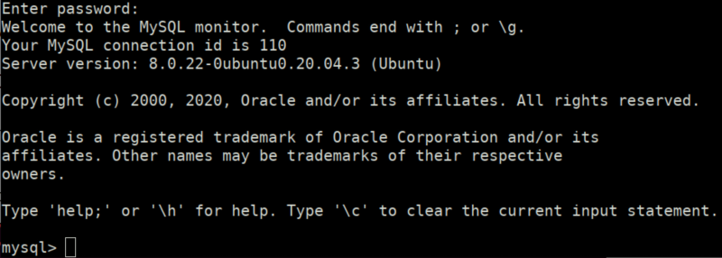
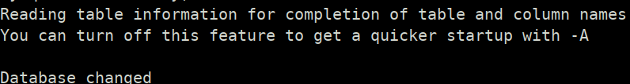

SQL Shell 5
We're going to add some more functions to get information.
$ sudo mysql -u root -p
Password: toor
Output:
Once we're in Mysql shell we can type commands.
Using a database.
mysql> use security;
Output:


Index